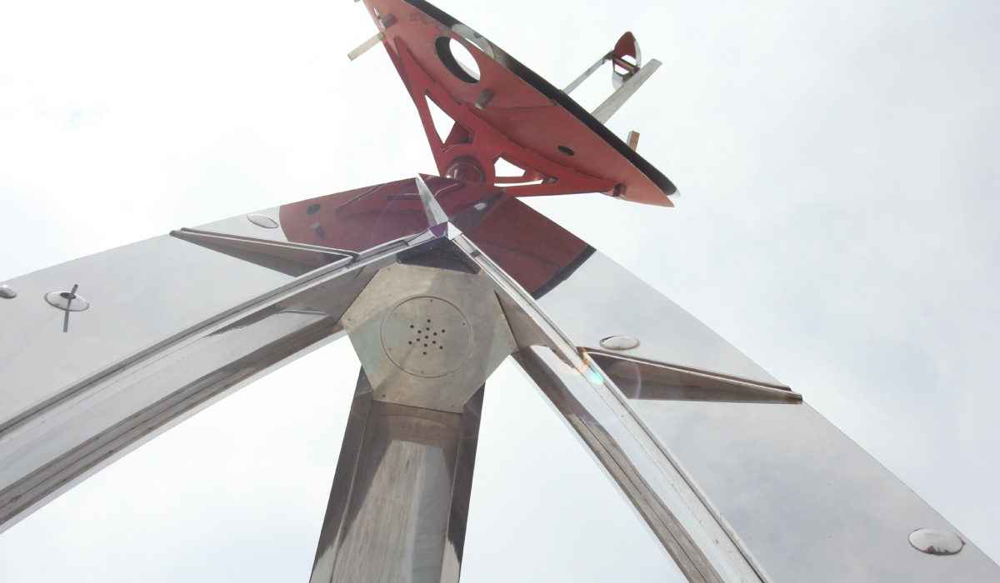
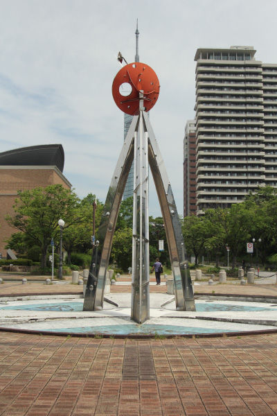
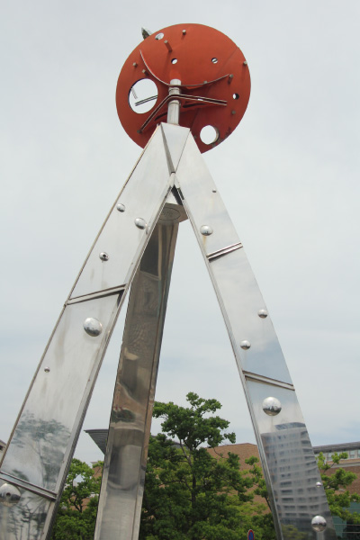
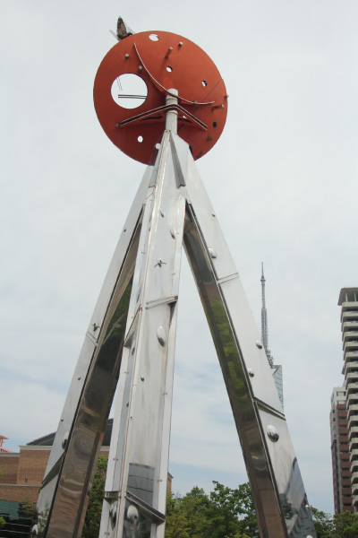
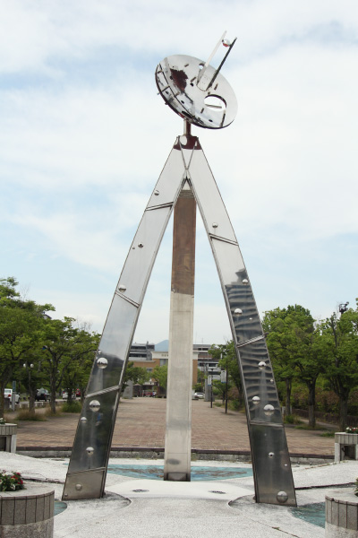
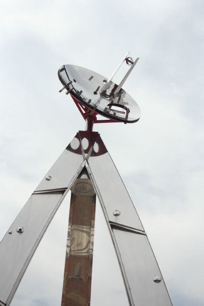

菊竹 清文
    
バブル最高潮の平成元年、福岡市が市制施行100周年を記念して、現在の早良区百道浜や中央区地
行浜の一帯の埋め立て地を会場に、市を挙げて催した一大フェスティバル「アジア太平洋博覧会
（よかトピア）」大会当時は噴水としても機能していた。アート作品であり、バブル期の遺産でも
ある。作者は久留米市出身の情報彫刻家。「人間」と「自然」と「技術」を一体化した「情報彫刻」
という新しい領域の作品を発表。理工学系の大学に通い、エンジニアとして最先端の技術を研究し、
その技術をアートに落とし込み、芸術活動を始めた。長野オリンピック聖火台などの制作も行った。